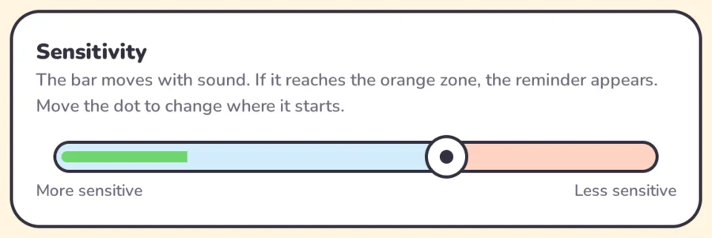
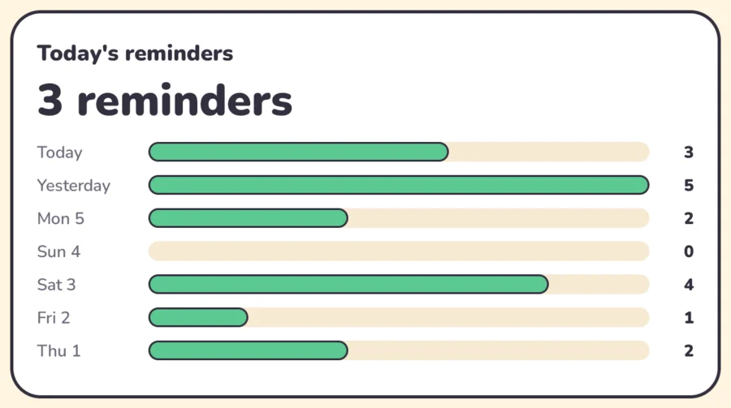

A gentle reminder when voices get loud
When your child shouts while using the tablet, a friendly character appears going “shh”. No scolding, no scares.

How it works
Always the same three steps. A predictable reminder is part of the idea.
It listens
While the screen is on, it measures how loud it is. It never records.
It spots the scream
If the sound reaches the orange zone, it’s a scream. Short bangs don’t count.

It reminds, calmly
The screen dims softly, a character appears and a “shh” plays. Two seconds later, all is back.
You stay in control
A simple screen for parents and therapists. These are real screenshots.
Sensitivity that fits your child
Talk and watch the green bar move. Slide the dot just above a normal voice: only shouts will reach the orange zone.

See how the week is going
Count today’s reminders and compare the last seven days. Fewer reminders, calmer days.

Their favorite characters
It comes with a girl and a boy. Add PNG images of the characters your child knows and loves; one appears at random.


Peppa Pig © Entertainment One (Hasbro). The Backyardigans © Nickelodeon and Nelvana. Shown only as examples of characters you can add; Shusher is not affiliated with them.
Your audio never leaves the device
Shusher doesn’t even have internet access. Sound is only used to measure volume and is discarded right away. No accounts, ads or tracking.
Get Shusher for free
- Download the APK on your Android tablet or phone.
- Open it and allow installing from that source.
- Choose a language and tap Start. Done!
Are you a developer? Build it from the source code.